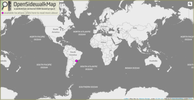

Star
Follow @kauevestena
OpenSidewalkMap
A project focused on OpenStreetMap Sidewalk Networks Data!!

We have a decentered structure:
for each location, one implementation!!
We have a decentered structure:
for each location, one implementation!!